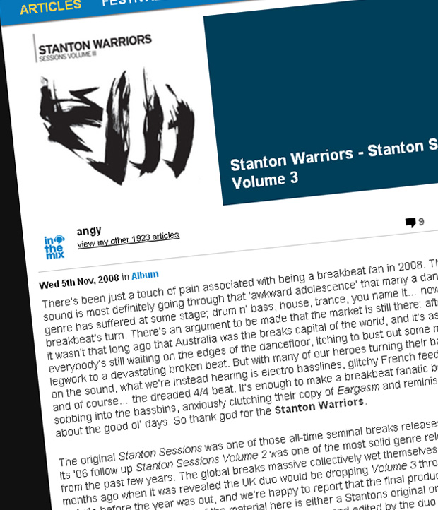

Stanton Warriors - Stanton Sessions Volume 3
{kind=link}

There’s been just a touch of pain associated with being a breakbeat fan in 2008. The sound is most definitely going through that ‘awkward adolescence’ that many a dance genre has suffered at some stage; drum n’ bass, house, trance, you name it… now it’s breakbeat’s turn. There’s an argument to be made that the market is still there: after all, it wasn’t that long ago that Australia was the breaks capital of the world, and it’s as if everybody’s still waiting on the edges of the dancefloor, itching to bust out some mad legwork to a devastating broken beat. But with many of our heroes turning their backs on the sound, what we’re instead hearing is electro basslines, glitchy French feedback and of course… the dreaded 4/4 beat. It’s enough to make a breakbeat fanatic begin sobbing into the bassbins, anxiously clutching their copy of Eargasm and reminiscing about the good ol’ days. So thank god for the Stanton Warriors.
The original Stanton Sessions was one of those all-time seminal breaks releases, and its ‘06 follow up Stanton Sessions Volume 2 was one of the most solid genre releases from the past few years. The global breaks massive collectively wet themselves a few months ago when it was revealed the UK duo would be dropping Volume 3 throughFabric before the year was out, and we’re happy to report that the final product is a corker. Nearly 100 per cent of the material here is either a Stantons original or remix, or otherwise a tune that’s been touched up, brushed over and edited by the duo to transform it into a breakbeat stormer. If you’ve kept up with their live sets over the past 18 months then you’ll already be familiar with a lot of the exclusive cuts here, but nonetheless it’s of a cracking quality from start to finish, with plenty of surprises for even the most devoted fan.
What’s most impressive about Stanton Sessions Volume 3 is how committed Mark Yardley and Dominic Butler are to pushing the breaks sound forward. It’s true, Yardley might have gone on to explore his house music curiosity with his Splitter side project, but when it comes to the Stantons Warriors, they’ve stuck true to their broken-beat roots. In the face of their beloved scene going through the afore-mentioned ‘awkward adolescence’, instead of throwing their hands up in defeat and trotting off to produce electro, tech and fidget house like so many others, the Stantons have done something different altogether. They’ve taken electro, techno and fidget, grabbed a big hammer and the got to work skillfully mashing all these styles into breakbeat.
Earlier this year ITM chatted with tech-funk heavy Meat Katie, where he offered his ideas on what he thought breaks was lacking in 2008. “There’s still some good music coming through, but a lot of it is starting to sound generic… All of a sudden, breaks are starting to sound like breaks.” Meat Katie was on the money with this observation, but the Stanton Warriors have managed to buck this trend. The bottom-heavy broken beats are consistent throughout, but that’s about it as every new track brings with it a different sound aesthetic – be it electro, urban, hip hop, Baltimore or tech. They’ve all been pushed through the Stantons sieve, to deliver some of the best breakbeat that we’ve been treated to in quite a long time.
To give you an idea of how comprehensive their approach is, some of the artists reworked here include Yo! Majesty, Boyz Noise, Digitalism, DJ Medhi, Chromeo, Fatboy Slim’s new BPA project and many, many more over the course of 18 tracks. The shrieking, high-pitched Nifty represents the absolute pinnacle of the electro-breaks sound and it just doesn’t get any better, but that’s not to say straightforward breaks have been completely forgotten. The duo’s massive reworking of Plump DJs’ Changing Gears is about as recognisably Stanton Warriors as it gets, and there’s a section in the middle that brutally gets down to business in tearing things right out.
All up, it’s a rock-solid release right up until the closing remix of Chemical Brothers’Saturate, the same tune the pair have been using to close their sets over the past 12 months. Stanton Sessions vol. 3 is the best release of the year for the genre, and it’s solidified Yardley and Butler’s status as dance music heavyweights. As breakbeat warriors in touch with their roots, but also taking the initiative to show us the way forward. Creative, inspirational, eclectic and dynamic – breaks are awesome again. All hail the Stanton Warriors.
Check out the tracklisting…
01. Intro – Stanton Warriors
02. Yo Majesty – Club Action [Stanton Warriors Remix]
03. Plump DJs – Shifting Gears (Stanton Warriors Remix)
04. DJ Deekline & Ed Solo – ‘Handz Up!’ ft. Benzo, Flipside and Big Booty Kim (Stanton Warriors Remix)
05. Stanton Warriors – Raw Meat
Too Short – Blow The Whistle
06. Hysterix – Talk To Me (Sasha’s Full Music Master Remix)
DJ Icey – Master Hysterix (VIP Dub Mix)
07. Boyz Noize – Oh ! [A-Trak Remix]
D-lirium & Faze – Bonus Beats
08. Timebox – Beggin’
Stanton Warriors – Bonus Beats
09. Stanton Warriors – Blaze (Baobinga & ID Mix – Stanton Warriors Edit)
10. Basement Jaxx – Nifty
Plump DJs – Bonus Beats
11. Bryan Cox – Let’s Go To Work (Douster Mix)
12. Stanton Warriors – Get Wild (Bassbin Twins Mix)
13. The BPA – Toe Jam Ft. David Byrne & Dizzee Rascal [Stanton Warriors Mix]
14. Alan Braxe Ft. Killa Kella & Fallon – Nightwatcher [Show Me] – [Tony Senghores Night Vision Version]
Stanton Warriors – Addictive
15. Digitalism – Zdarlight [Album Version]
Stanton Warriors – Bonus Beats
16. DJ Mehdi – Signatune [Thomas Bangalter Edit]
Stanton Warriors – Bonus Beats
Chromeo – Needy Girl (Acapella)
17. Stanton Warriors – Precinct
18. The Chemical Brothers – Saturate
Stanton Warriors – Bonus Beats
Stanton Warriors – Hope Time (Acapella)